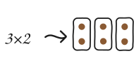

a research prototype · UIST demo
The tutor that changes
 the picture,
the picture,
not the pace.
EmotiMath is a voice math tutor, that measures how hard learners are thinking, and the tutor adapts the problem's representation with concreteness fading.

the problem
A right answer can hide a learner who is drowning.
Adaptive tutors mostly adapt on one signal: was the answer correct? That signal arrives late, and it cannot see overload. A learner can grind out the right result while completely overloaded.

a typical AI tutor
Correct, so move on?
A human tutor sees the furrowed brow and the counting fingers, while a typical AI tutor only sees the answer. A learner who is overloaded and one who has already mastered the content can look exactly the same.

EmotiMath
Overloaded, so make it concrete!
The sensor reads how hard the learner is thinking without waiting for an answer. When the load climbs, tutor will tell the same problem in more concrete way.
concreteness fading
One problem, told three ways.
Math is typically learned from concrete objects, to visual representations, and finally to abstract numbers. EmotiMath steps forward in representation, when the learner is comfortable and steps back when the load climbs.


how it works
From a fingertip to a redrawn problem, in four steps.
The learner just does math out loud. The tutor will decide which representaiton to pick.

1.
Sense
EmotiBit worn on a fingertip streams physiological signals over Wi-Fi to a laptop, where the affect engine reads them.

2.
Calibrate
First, a short calm stretch sets this learner's own baseline. Every load score after that is measured against it, instead of population average.

3.
Decide
The tutor checks the load score. Too high, it steps one level more concrete. Low, and it can step toward abstract.
4.
Re-draw
The same question comes back with the representation decided by the tutor.
in action
It waits for the right moment.
Below is an illustrative load trace, run through the tutor's real rule: smoothed, held for 20 seconds after any change, and moved only when the load leaves the keep band.
the learner's thinking load
0.30easy
 1 · ConcreteReal world objects2 · PictorialGeometric shapes3 · AbstractNumbers and symbols
1 · ConcreteReal world objects2 · PictorialGeometric shapes3 · AbstractNumbers and symbolsEasy again — but it just changed. Give it a moment.
demo setup
Sit down and solve a few.
An iPad for you, a laptop for us, and a sensor in between.

1 The iPad. Tutor Buddy, one problem, and a button to talk.
2 The sensor. An EmotiBit, worn on one fingertip.
3 Our laptop. Your load and the tutor's decisions live.
Rather not wear the sensor? We can play back a recorded session instead.